Obsidian + AI로 만드는 개인 비서
by 박슬기 · 2026.03
슬비스 (Claude Code)
├── CLAUDE.md ← 행동 규칙
├── Obsidian Vault ← 지식 베이스 (두뇌)
│ └── Obsidian CLI ← 읽기/쓰기 도구
├── gcalcli ← Google 캘린더
└── gh CLI ← GitHub| 폴더 | 용도 |
|---|---|
| Daily | 일일 노트 (일정/할일/뉴스/기록) |
| 육아 | 겨울이 성장 기록, 수유 |
| SNS | 블로그/인스타 글감 |
| 투자 | ETF 분석, 투자 메모 |
| 아티클 | 읽을거리 추천, 요약 |
| 슬비스 | 프로젝트 기록, 운영 가이드, 회고 |
AI 도구가 바뀌어도 유지되는 지식
매일 아침 한 번의 명령으로:
다른 skill은 필요에 따라 추가 예정
실행 결과 예시
📅 일정
❤️ 가족 | 출산 휴가 (진행 중)
📰 AI/기술
1. AI 에이전트 워크플로우 3가지 패턴
2. OpenAI 에이전트 구축 실용 가이드
3. Claude 인터랙티브 시각 자료 생성
🏛️ 경제/정치
1. 석유 최고가격제 시행
2. 3월 상순 수출 역대 최대
3. 대통령 지지율 66%
→ 일일 노트에 자동 저장
| 저장소 | 용도 |
|---|---|
| Obsidian vault | 모든 지식 · 기록 · 사용자 선호 |
| AI 도구 내부 | 현재 도구의 동작 설정만 (최소한) |
원칙: AI 도구는 언제든 바뀔 수 있다.
중요한 기록은 반드시 Obsidian에 남긴다.
/daily → 일정 + 뉴스 브리핑완벽하지 않아도 괜찮다.
함께 성장하면 된다.
github.com/parkseulkee/slvis